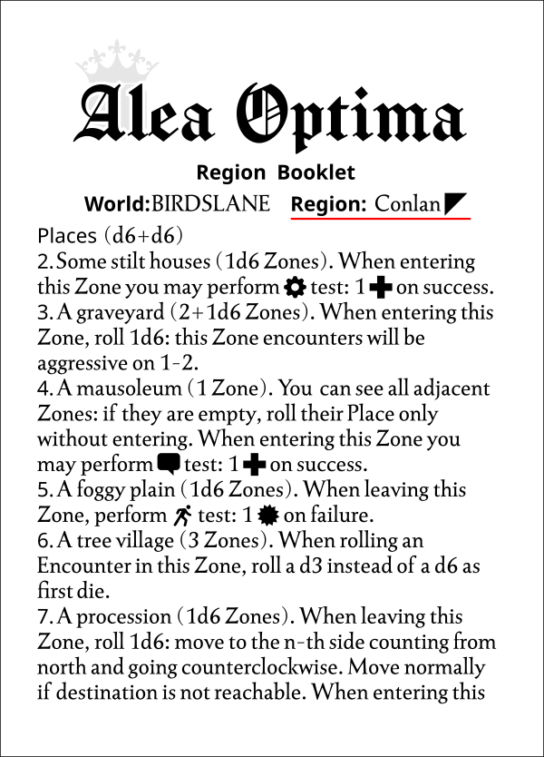
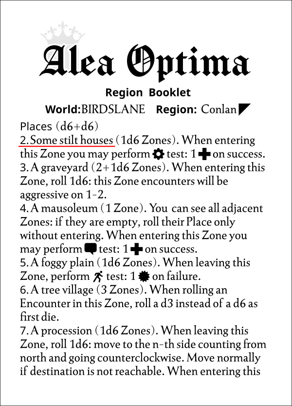
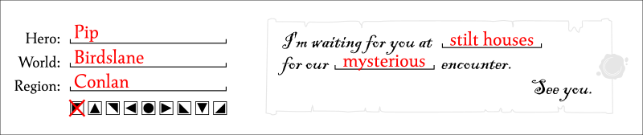

Sample playthrough
Let's play a little Alea Optima together!
I've told Alea Optima I want to travel the Birdslane world. I've printed all the pages in the downloaded PDF, cut and folded the Manual Booklet and the Region Booklet, and put the blank map aside.
I've also picked 3 dark and 3 light dice, a pencil, an eraser, and a token. I should be ready to go!
Now I'm following the Manual Booklet Starting a New Game steps one by one.
1. Pick a Region Booklet and a character sheet with a matching birthplace, or create a new one (see below).
I haven't a character sheet matching my new Region Booklet, so I'll create a new character.
1. Pick any Region Booklet: its World name is your character's birthplace.
2. Pick an empty character sheet. On the right side, from top to bottom, draw your character portrait, write your character name and birthplace, and set 6 Health and 6 Gold.
3. You may narrate your character's backstory and how it got a Portal Stone. To determine a profession, roll 1d3 and 1d6 on the Region Booklet Creature Type table.
I only have this Birdslane Region Booklet now...
...so my character's birthplace is Birdslane. I want to play Pip, a troublemaking kid! On the character sheet that's on the back of the Manual Booklet, I'm drawing Pip's portrait, filling in his name and birthplace, and setting 6 as Health and Gold.
How did Pip get his hands on a Portal Stone? Hmm. He's obsessed with becoming a Hero, so - one day - he skipped school, stole the Portal Stone from his parents, and started his journey! It should be enough as a backstory. I already decided that Pip is an undisciplined student, so I don't need a profession for him and I'm skipping the Creature Type roll suggested by the manual.
My character sheet is ready. Let's go ahead!
2. Pick an empty Map, fill in the Hero, World, and Region names, and tick the Region symbol. Fill the Letter using the Region Booklet: roll 1d3+1d6 on the Places table and 2d6 on the Encounter Type table.
On the bottom left of the map I'm writing Pip as Hero, and Birdslane as World.
The Birdslane Region Booklet I'm using is about the Conlan region, with a symbol of a triangle pointing at the top-left.
I also note this on the map.

Now Pip is going to receive his mysterious letter. I have to roll a 1d3+1d6 on the Places table to get where the sender wants to meet Pip.
Let's pause the game a little now. I'd like to decide some rules on dice rolling to make the table less messy. From now on, when I've to roll dice pairs on tables, I'll always use a dark die that will be the first die, and a light die that will be the second die. I also haven't a true d3 right now, so I'll use regular a d6 and convert the values this way:
| d6 value | d3 value |
|---|---|
| 1 | 1 |
| 2 | 2 |
| 3 | 3 |
| 4 | 1 |
| 5 | 2 |
| 6 | 3 |
Back to the game. I roll a dark die and a light die on the Places table: a dark 4 (converted to a d3 as 1) and a light 1. The sum is 2 and the Places table says Some stilt houses.
Then I roll 2 more dice on the Encounter Type table: a dark 6 and a light 1. The Encounter Table says that a Mysterious meeting awaits Pip!
I fill the letter placeholders at the bottom of the map with my roll results.
The letter is complete! "I'm waiting for you at stilt houses for our mysterious meeting. See you.". Who is waiting for our little Pip, hidden in the stilt houses? Maybe I'll find it out during my trip! Let's keep reading the manual.
3. Place your Character Token on the Portal Zone. It's a Zone with no Encounters and contains the portal only.
4. Choose a Zone and follow the Game Flow.
I place the Character Token on the Portal Zone. Pip will begin his adventure by going northeast.
I'll follow the Game Flow section of the manual now.
1. If entering an empty Zone, roll on the Places table, draw the location on the map, and record the rolled value in the Zone's circle. Some Places span multiple adjacent Zones to form a group.
The Zone is empty, so I roll d6+d6 on the Places table. A dark 2 and a light 4. The sum is 6...
6. A tree village (3 Zones). When rolling an Encounter in this Zone, roll a d3 instead of a d6 as first die.
Pip adventure starts on a tree village that's 3 adjacent Zones large! I prefer adding the zone numbers in the circles first and then drawing into the hexagons, to have a better idea of the place shape... but you can do as you prefer. I'm making the village triangle-shaped, selecting 3 Zones adjacent to each other.I could have also chosen 3 zones in a row and made a village that runs along a row of trees... but I like the idea of it being a small center that welcomes adventurers coming from the Portal.
About this tree village, the Region Booklet says "When rolling an Encounter in this Zone, roll a d3 instead of a d6 as first die." I'll keep that in mind.
I continue reading the manual:
2. If the Zone has no recorded Encounter, roll on the Encounter Type and Creature Type tables, then Record results (or just the numbers) in the Zone hexagon's two empty spaces.
Let's find out who's about to welcome Pip! I roll 2 dice on the Encounter Type table: a dark 6 and a light 1. The tree village zone description says that I have to roll a d3 instead of a d6 as the first die. So I've rolled a 3 and a 1...
Uh, oh. Now I roll 2 dice on the Creature Type table: a dark 1 and a light 6...
A Seductive (rolled 3 and 1) encounter with a Herbalist (rolled 1 and 6). I'll write the numbers on the zone hexagon's two empty spaces...
I continue reading the manual:
2A. If the Encounter Type and the Place match the Letter, narrate the encounter with the mysterious sender! Why does it need you?
The Encounter Type and the Place do not match the letter at the bottom of the map, so this Herbalist is not its sender.
3. Move your Character Token to that Zone. Get inspired by the recorded Zone Encounter and:
3A. If the Zone is marked as Solved, you may narrate the Encounter aftermath.
3B. If the Zone is not marked as Solved, you may narrate the Encounter and, if you think it requires your character intervention, select a fitting Stat between Battle, Agility, Fixing, or Social, and perform a Test to earn any success and solve it.
The Zone is not marked as Solved (i.e., the Zone border is not outlined) so I have to narrate Pip's Seductive encounter with the Herbalist of the tree village. I can interpret the elements I have as I wish. The herbalist could have fallen in love with Pip at first sight, or I could interpret the "seductive" Encounter Type as an invasive way of selling him his herbs. I prefer the latter idea.
"Hey! You! Little portal adventurer! What a muscle man!" An old man exclaims as he sees Pip emerge from the portal.
"Oh, great..." Pip thinks to himself. "I just got here and there's already someone trying to sell me something!"
"Come closer, little boy! You'll need my herbs for your loong loong loong journey!" exclaims the rickety herbalist, dragging his large backpack with both arms.
"I wanted to start with a heroic battle..." Pip thinks as he answers the old man with a forced smile. "Instead I have to get rid of a stubborn old man. Damn!"
This encounter requires Pip's intervention: it must get rid of this pushy salesman! To find out if it will succeed, I will have to perform a test between Battle, Agility, Fixing, and Social.
I've to choose a fitting test. Pip may Attack the Herbalist to scare him. He may try to hide from him with an Agility test. He may try to help him with his aches and pains or fix his worn backpack with a Fixing check. He may try to convince him that he doesn't need his herbs with a Social test.
Pip is a lively boy but he would never hurt a weak person. And he doesn't trust this shady herbalist enough to help or have a chat with him. Instead, Pip never misses an opportunity to play a prank. He will try to hide with an Agility test!
Let's see the Performing a Test on a Stat manual section:
1. Decide the test target value and range. Creatures have their suggested targets on the Creature Type table: for battle tests, they have a bolded value between 1 or 2 range numbers and a wounds value, for social tests they have value and range only. If no target is specified, use value 21 and no range.
The Herbalist stats are here, on the Creature Type table:
As for the manual, there aren't stats for Pip's Agility test, so the target value will be 21 with no range.
2. Act: Roll 1 dark and 1 light die. You may add up to 4 dice (3 if disadvantaged): if the sum is less than 17 add dice pairs, otherwise add single die alternating colors (you decide the first one).
3. Push: You may pay 1 Gold or lose 1 Health to reroll 1 die or +1/-1 any rolled die. 6s can only be decreased and 1s only increased. If advantaged, you may repeat this step twice.
4. Unleash: You may adjust 1 die value if it matches a ticked column in the character sheet tested Stat section by the tick count on that dice row. Dark dice values can only be increased and light dice values can only be decreased. If advantaged, you may repeat this step twice.
5. If the dice total value hits the target value, it is a great success. If it falls within the target range it's a success. Otherwise, it's a failure.
Let's start with the Act phase. For my first pair, I've rolled a dark 6 and a light 5, for a total of 11. It's less than 17, so I'm going to add another dice pair.
For my second pair, I've rolled a dark 3 and a light 3, for a total of 17. We are almost at 21 but, fortunately, having reached the sum of 17, we can now add one die at a time.
I'm rolling a dark die. I've rolled a dark 5, for a total of 22. I failed by a very small margin but it's not over yet...
In the Push phase, Pip can make one last effort and lose one of his resources to adjust the dice result. I want Pip to succeed in this test, so I'm losing 1 Gold to reduce the value of one of my dice by 1...
...to reach a total of 21. It's a great success! How did Pip succeed?
The pushy herbalist is hot on Pip's heels, following him with his eyes through the stalls like a bloodhound. How can he lose his trail?
Pip pulls a gold coin from his pocket and rolls it to his pursuer's feet. "A gold coin! How lucky!" exclaims a corpulent merchant nearby. "I saw it first!" replies a lady with a large basket in her hand, gesticulating.
"Let me pass!" the herbalist exclaims in agitation. "The boy is running away, damn it!"
Is there a prize for this success? And why is this herbalist so attracted to Pip? Let's continue reading the manual:
6. On Zone Encounter Tests (i.e. Game Flow 3B step): Gain a prize on great success, Pay a price on failure.
6A. Gain a prize: the suggested prize for battle and agility tests is 1 Gold and for fix and social is 1 Health. You can never have more than 6 Health and 10 Gold.
6B. Pay the price: the suggested price for battle and agility tests is 1 Health and for fix and social is 1 Gold. If you have no Gold, you may pay 1 Health instead. Creatures have their battle tests suggested price as wound.
I achieved great success in an agility test, for which Pip Gain a prize! It's 1 Gold. Where does it come from? I'll try to tell it.
The coin left by Pip creates chaos in the market, passing furiously from hand to hand. The herbalist is now far away, swallowed up by the crowd.
Pip has no intention of losing his precious coin and keeps an eye on it by jumping from kiosk to kiosk. A well-dressed gentleman, who with a well-placed push has managed to appropriate the coin, slips it safely into his purse... but Pip's little hand is waiting for it instead.
I've decided that the gold Pip earned is the same gold he lost to set his plan in motion! Back to Game Flow:
3B. If the Zone is not marked as Solved, you may narrate the Encounter and, if you think it requires your character intervention, select a fitting Stat between Battle, Agility, Fixing, or Social, and perform a Test to earn any success and solve it.
Pip's intervention has been successful so we've Solved the Zone! Let's see the Solving a Zone manual section:
1. If the Zone's inner hexagon border is outlined, it has been already solved or can't be solved. The solving ends.
2. Outline the border now. Tick the next squared cell from the XP sections, from left to right and from top to bottom if any.
I outline the current hexagon on the map...
...and tick the next XP on the character sheet...
...then:
3. If solving the Zone due to an Encounter Test (i.e. Game Flow 3B step):
3A. If your character sheet tested Stat section name is blank and it doesn't appear in any other space, write the Encounter's Creature Type. You just met a key character of your story and you'll meet it again on every Encounter with the same Creature Type.
3B. Otherwise, if the Encounter's Creature Type matches your character sheet tested Stat section name, tick that section's next empty squared cell from top to bottom if any. If you just ticked the last squared cell, you may narrate the farewell.
I've solved the Zone due to an Encounter Test. I've just passed an agility test with the Herbalist and the agility section name on the character sheet is still blank. I'm writing the Herbalist word there, making it a key character of Pip's story. Sooner or later we will meet him again!
The herbalist takes one last look around, before banging his fist on the wall. He spits on the ground and walks away bitterly.
"Who... who the hell is that guy?!" Pip exclaims, poking his head out from under a bag of chickpeas. "What does he want with me?!"
The manual continues:
4. If you just ticked any cell with a dot, tick as many round cells on your character sheet.
I didn't check any boxes with a dot, so I'm leaving the character sheet round cells untouched. Let's continue with the Game Flow:
4. Roll a die. On 4+, roll on the Events table to see what happens next.
I've rolled a 4 so, before our Pip can leave the market, something else will happen to him! I've rolled a dark 6 and a light 3...
3. A fetid furball has targeted you! Perform battle test: on success perform next 4 social tests with Advantage.
A fetid furball has targeted our Pip! I have a battle test to do, so I guess Pip has to fight it. If the test succeeds, I can make my next 4 social rolls with advantage. Why? I'll think about that later. In the meantime, I introduce the stinky opponent...
"Look out! Wild boars!" A small group of particularly agitated guards are clearing the market. Pip comes out of the sack of chickpeas with difficulty and in a daze. "Crazy old men and wild boars in trees? What kind of place is this?!"
One of the boars doesn't seem to appreciate Pip's nonchalance and, after taking a run-up, jumps on him!
Time to roll some dice! There is no target specified, I'm using the 21 target value with no range.
I've rolled a dark 1 and light 3, a dark 5 and a light 2, and a dark 6 and a light 2. That's a total of 19. I may Push, lose 1 resource, and reroll 1 die... but I prefer Pip to retreat.
Just as Pip was about to be hit, one of the guards managed to push the angry beast back. "What are you doing here? Run away!" the guard urged him.
It's a pity. What could have happened if it had succeeded? What would it have granted to Pip 4 social rolls with advantage?
Perhaps those present would be impressed by his skill and courage, turning him into a small local hero for a while. Or would the adrenaline of victory make him more self-confident?
Anyway, the event is over, so...
5. If the Event doesn't move you, choose an adjacent destination Zone: you will leave your current Zone to enter that Zone.
6. Repeat from step 1.
Now Pip can decide whether to explore the tree village some more moving to north-east or south-east, venture out into the Conlan region moving to north, north-west, or south, or go back to the portal to south-west and decide another destination...
What other adventures does Alea Optima hide? Start your journey and find out!